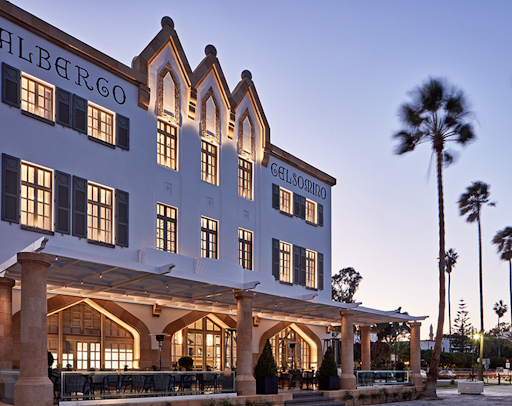

Albergo Gelsomino
Hotel
Albergo Gelsomino is one of the most iconic landmarks of Kos, built in 1928. After 90 years, it has been impeccably restored to regain its unparalleled beauty and character and welcomes guests to enjoy a refined holiday throughout the year. The hotel presides majestically on the beach overlooking the Aegean Sea and offers undisturbed views of the neighbouring lands and Kos town.
Its interior concept is a fusion of elegance with modern artistic twists and pops of colour, adding to its creative energy. All 6 Junior and 2 Executive Loft suites have been carefully designed to reflect their own individual personality. Standing out for its high ceilings, tall windows with beautiful sea and boulevard views, exceptional restaurant and exclusive beach club, Gelsomino defines the essence of luxury with a nod to the past and a legacy for the future.
Contact us
- T +30 2242 020200
- info@gelsominohotel.com
- 1 Vas. Georgiou, Kos, 85300, Greece